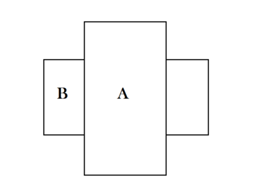
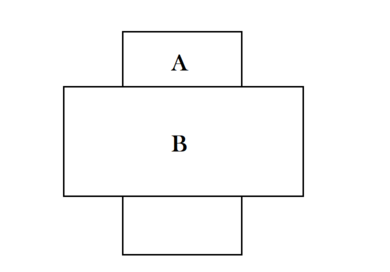
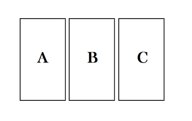

La mejor manera de memorizar el sentido de las cartas del Tarot es ponerlas en acción en nuestra vida cotidiana. Se baraja el Tarot como un juego normal, sin darles la vuelta en su orientación arriba / abajo. Después, tras haberlas colocado en el mazo, se extienden horizontalmente, boca abajo. Una vez extendidas, se escoge una o mas cartas que se disponen, según la estrategia de lectura elegida. Se puede trabajar con muchas estructuras, dos de las "básicas" son las siguientes:
Esta tirada consiste en colocar una carta boca abajo y otra cruzada encima. La primera es el deseo, la situación en la que nos encontramos. La segunda representa el conflicto, el obstáculo, lo que nos impide avanzar. A partir de aquí se hacen dos lecturas:
La carta del conflicto esta sobre la otra, como vencedora. En esta configuración el conflicto, el obstáculo, parece insoluble.
La carta del conflicto, del obstáculo, se encuentra bajo la carta que representa la situación, el deseo. Esta situación indica la superación del conflicto, del obstáculo.
Aquí se pueden utilizar estructuras en las cuales las tres cartas representan tres elementos preestablecidos. Por ejemplo: pasado, presente y futuro. También, a partir de la lectura de tres cartas, siempre se pueden sacar algunas cartas más para aclarar la situación.
Las cartas A, B y C representan respectivamente el pasado, el presente y lo que esperamos en el futuro.
